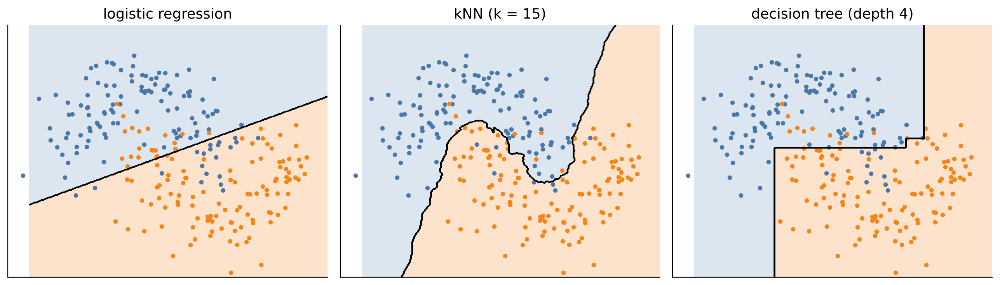

# Setup: works locally and in Google Colab
import importlib.util, subprocess, sys
for pkg in ["ucimlrepo"]:
if importlib.util.find_spec(pkg) is None:
subprocess.run([sys.executable, "-m", "pip", "install", "-q", pkg], check=True)
import numpy as np
import pandas as pd
import matplotlib.pyplot as plt
import seaborn as sns
sns.set_theme(style="whitegrid")7 Classification
Many engineering decisions are categorical: a part is OK or not OK, a machine will fail within the next shift or not, a fault belongs to type A, B or C. Predicting such a category from measured data is called classification. It is the core of automated quality inspection, predictive maintenance and fault diagnosis.
Classification raises questions that regression does not. How do we measure the quality of a classifier when failures are rare? What is worse – a false alarm or a missed failure? And how do we choose the decision threshold that turns a predicted probability into an action? This chapter introduces three basic classifiers and, just as importantly, the metrics to evaluate them honestly.
Engineering question: Can we detect machine failures from process data – and what does it cost if we miss one?
Learning goals. After this chapter you can
- explain how logistic regression, k-nearest neighbours and decision trees classify,
- evaluate classifiers with confusion matrix, precision, recall, F1, ROC and precision–recall curves,
- handle strongly imbalanced classes with class weights, suitable metrics and threshold choice,
- choose a decision threshold based on the costs of errors,
- recognise and avoid data leakage.
Datasets in this chapter
7.1 Three ways to classify
In classification, the response \(y\) takes one of \(K\) classes; in the binary case \(y \in \{0, 1\}\) (e.g. 1 = failure). Most classifiers estimate the probability \(P(y = 1 \mid x)\) and predict class 1 if this probability exceeds a threshold, by default 0.5.
7.1.1 Logistic regression
Definition: Logistic regression
The probability of class 1 is modelled as \[P(y = 1 \mid x) = \sigma(\beta_0 + \beta^\top x), \qquad \sigma(z) = \frac{1}{1 + e^{-z}}.\] Equivalently, the log-odds are linear in the inputs: \(\ln\frac{P(y=1\mid x)}{1 - P(y=1\mid x)} = \beta_0 + \beta^\top x\). The parameters are estimated by maximum likelihood.
Logistic regression is the classification counterpart of linear regression: simple, fast, interpretable. A coefficient \(\beta_j\) means that one unit more of \(x_j\) multiplies the odds of failure by \(e^{\beta_j}\) (the odds ratio). Its decision boundary – the set of \(x\) where the probability equals the threshold – is a straight line (a hyperplane). Nonlinear boundaries require engineered features such as products or squares.
7.1.2 k-nearest neighbours (kNN)
kNN stores the training data and classifies a new point by majority vote of its \(k\) nearest training points. It makes no assumption about the shape of the boundary, but it depends entirely on the distance measure – inputs must be standardised, otherwise the input with the largest numerical range dominates. Small \(k\) gives ragged boundaries (high variance), large \(k\) smooth ones (high bias).
7.1.3 Decision trees
A decision tree splits the input space step by step with simple rules such as “torque > 55 Nm”. At each node, the split is chosen that makes the resulting groups as pure as possible, measured e.g. by the Gini impurity \(G = 1 - \sum_k p_k^2\), where \(p_k\) is the share of class \(k\) in the node. Trees are easy to explain to colleagues and can capture interactions and thresholds, but a single deep tree overfits strongly; its depth must be limited. Chapter 8 shows how combining many trees fixes this.

7.2 Evaluating classifiers
Definition: Confusion matrix and derived metrics
| predicted OK (0) | predicted failure (1) | |
|---|---|---|
| actual OK (0) | true negative (TN) | false positive (FP) – false alarm |
| actual failure (1) | false negative (FN) – missed failure | true positive (TP) |
- Accuracy = (TP + TN) / all
- Precision = TP / (TP + FP): how many alarms are real?
- Recall (sensitivity, detection rate) = TP / (TP + FN): how many failures are detected?
- F1 score = harmonic mean of precision and recall
- Balanced accuracy = mean of the recall of both classes
Pitfall: accuracy on imbalanced data
If 3 % of the records are failures, a “model” that always predicts “OK” reaches 97 % accuracy – and detects nothing. With rare events, accuracy is almost meaningless. Use precision, recall, F1 or balanced accuracy, and always look at the confusion matrix.
Precision is nothing but \(P(\text{failure} \mid \text{alarm})\) – Bayes’ theorem from Chapter 3. When failures are rare, even a detector with high recall and a low false alarm rate can have a low precision.
7.2.1 Thresholds, ROC and precision–recall curves
Lowering the threshold produces more alarms: recall increases, precision usually decreases. Instead of judging a single threshold, we can look at all thresholds at once:
- The ROC curve plots the true positive rate (recall) against the false positive rate FP/(FP + TN). The area under the curve (ROC AUC) is the probability that a randomly chosen failure gets a higher score than a randomly chosen OK record; 0.5 = random guessing, 1 = perfect ranking.
- The precision–recall curve plots precision against recall. For rare events it is more informative than ROC, because the false positive rate stays small even when the false alarms far outnumber the true alarms.
Engineering practice: choose the threshold by costs
The threshold 0.5 is arbitrary. If a missed failure costs \(c_{FN}\) and a false alarm \(c_{FP}\), choose the threshold that minimises the total cost \(c_{FN} \cdot \text{FN} + c_{FP} \cdot \text{FP}\) – on validation data, not on the test data. For well-calibrated probabilities, the optimal threshold is \(c_{FP}/(c_{FP} + c_{FN})\): if a miss is 20 times as expensive as a false alarm, alarm already at a failure probability of about 5 %.
7.2.2 Strategies for imbalanced classes
- Stratified splitting: keep the class proportions equal in training and test data (
stratify=y). - Class weights: weight errors on the rare class more strongly during training (
class_weight="balanced"). - Resampling: undersample the majority class or oversample the minority class (only in the training data!).
- Threshold adjustment as described above – often the simplest and most effective measure.
7.3 Live coding: predictive maintenance
The AI4I 2020 dataset is a synthetic dataset that reflects a real milling process. Each of the 10,000 records contains the product quality variant (L/M/H), air and process temperature, rotational speed, torque and tool wear, and the label Machine failure. The failures are generated by five documented mechanisms: tool wear failure (TWF), heat dissipation failure (HDF), power failure (PWF), overstrain failure (OSF) and random failures (RNF). Because the mechanisms are known, the dataset is ideal to check whether a model has learned something physically sensible.
from ucimlrepo import fetch_ucirepo
ai4i = fetch_ucirepo(id=601).data.original
features = ["Type", "Air temperature [K]", "Process temperature [K]",
"Rotational speed [rpm]", "Torque [Nm]", "Tool wear [min]"]
X = pd.get_dummies(ai4i[features], columns=["Type"], drop_first=True)
y = ai4i["Machine failure"]
print(f"Failure rate: {y.mean():.1%}")
# NOTE: the columns TWF, HDF, PWF, OSF, RNF describe the failure mode.
# Using them as features would be data leakage!Code
sns.scatterplot(data=ai4i.sample(3000, random_state=0), x="Rotational speed [rpm]", y="Torque [Nm]",
hue="Machine failure", s=10, alpha=0.6, palette=["lightgray", "C3"])
plt.show()The failures are not spread randomly: they concentrate at very high torque with low speed and at very low torque with high speed – regions of high and low mechanical power. A linear boundary in this plane cannot separate them; this matters for the choice of model.
from sklearn.model_selection import train_test_split
from sklearn.pipeline import make_pipeline
from sklearn.preprocessing import StandardScaler
from sklearn.linear_model import LogisticRegression
from sklearn.neighbors import KNeighborsClassifier
from sklearn.tree import DecisionTreeClassifier
from sklearn.metrics import classification_report
X_train, X_test, y_train, y_test = train_test_split(
X, y, test_size=0.25, stratify=y, random_state=0)
models = {
"logistic regression": make_pipeline(StandardScaler(), LogisticRegression(class_weight="balanced", max_iter=1000)),
"kNN (k=5)": make_pipeline(StandardScaler(), KNeighborsClassifier(5)),
"decision tree": DecisionTreeClassifier(max_depth=5, class_weight="balanced", random_state=0),
}
for name, m in models.items():
m.fit(X_train, y_train)
print(f"--- {name}")
print(classification_report(y_test, m.predict(X_test), digits=3))Discussion. Read the reports row by row: the line for class 1 (failure) is the interesting one. Typically, logistic regression with class weights detects many failures (high recall) but raises many false alarms (low precision), because its linear boundary cannot isolate the failure regions. kNN without class weights is conservative: few false alarms, but many missed failures. The decision tree can represent the thresholds in torque, speed and tool wear that generate the failures and usually achieves the best balance. The accuracy row is high for all models – and says little.
Code
from sklearn.metrics import ConfusionMatrixDisplay, PrecisionRecallDisplay, RocCurveDisplay
fig, axes = plt.subplots(1, 3, figsize=(16, 4.5))
ConfusionMatrixDisplay.from_estimator(models["decision tree"], X_test, y_test, ax=axes[0], colorbar=False)
axes[0].set_title("Decision tree")
for name, m in models.items():
RocCurveDisplay.from_estimator(m, X_test, y_test, ax=axes[1], name=name)
PrecisionRecallDisplay.from_estimator(m, X_test, y_test, ax=axes[2], name=name)
axes[1].set_title("ROC curves"); axes[2].set_title("Precision–recall curves")
plt.tight_layout(); plt.show()Discussion. The ROC curves may look reassuringly good for all models, while the precision–recall curves reveal clear differences – the typical picture for rare events. The precision–recall curve directly shows the trade-off an engineer faces: “If I want to catch 80 % of the failures, how many of my alarms will be false?”
Key takeaways
- Classifiers estimate class probabilities; a threshold turns them into decisions – choose it by the costs of errors.
- Logistic regression: linear boundary, interpretable; kNN: local, needs scaling; trees: thresholds and interactions, must be kept shallow.
- With rare events, accuracy and ROC can look good while the model is useless – use precision, recall and precision–recall curves.
- Features that encode the outcome (here: the failure mode columns) cause data leakage.
7.4 Exercises
- Add the failure mode columns (TWF, HDF, PWF, OSF, RNF) as features and retrain the decision tree. What happens to the scores – and why is this result worthless?
- Assume a missed failure costs 10,000 € and a false alarm 500 €. Choose the decision threshold of the logistic regression that minimises the total cost. Use a validation split of the training data, not the test data.
- Visualise the decision tree (
sklearn.tree.plot_tree, depth 3). Do the rules make physical sense? - Construct the feature
power [W]= torque × angular velocity and the temperature difference between process and air. Do they improve the logistic regression? Why? - A test set has TN = 950, FP = 30, FN = 5, TP = 15. Compute accuracy, precision, recall and F1 by hand. Is the model useful?
7.4.1 Solutions
Solution to Exercise 1
X_leak = X.join(ai4i[["TWF", "HDF", "PWF", "OSF", "RNF"]])
Xl_tr, Xl_te, yl_tr, yl_te = train_test_split(X_leak, y, test_size=0.25, stratify=y, random_state=0)
tree_leak = DecisionTreeClassifier(max_depth=5, random_state=0).fit(Xl_tr, yl_tr)
print(classification_report(yl_te, tree_leak.predict(Xl_te), digits=3))Precision and recall jump to nearly 100 %. The failure mode columns are only known after a failure has been diagnosed – they essentially encode the label. In operation, at prediction time, they are not available. Such leakage produces impressive but completely useless models. Rule: for each feature, ask “Would I know this value at the moment I need the prediction?”
Solution to Exercise 2
X_fit, X_val, y_fit, y_val = train_test_split(X_train, y_train, test_size=0.3,
stratify=y_train, random_state=1)
logreg = make_pipeline(StandardScaler(), LogisticRegression(class_weight="balanced", max_iter=1000))
logreg.fit(X_fit, y_fit)
p_val = logreg.predict_proba(X_val)[:, 1]
c_fn, c_fp = 10_000, 500
thresholds = np.linspace(0.01, 0.99, 99)
cost = [c_fn * ((p_val < t) & (y_val == 1)).sum() + c_fp * ((p_val >= t) & (y_val == 0)).sum()
for t in thresholds]
t_best = thresholds[np.argmin(cost)]
plt.plot(thresholds, np.array(cost) / 1000)
plt.axvline(t_best, ls="--", c="k")
plt.xlabel("Threshold"); plt.ylabel("Total cost on validation data (k€)")
plt.show()
p_test = logreg.predict_proba(X_test)[:, 1]
cost_test = c_fn * ((p_test < t_best) & (y_test == 1)).sum() + c_fp * ((p_test >= t_best) & (y_test == 0)).sum()
print(f"best threshold {t_best:.2f}, cost on test data {cost_test / 1000:.0f} k€")The cost curve typically has a broad minimum. Note that with class_weight="balanced" the predicted probabilities are no longer calibrated (the model behaves as if failures were as frequent as OK records), so the optimal threshold differs from the theoretical \(c_{FP}/(c_{FP}+c_{FN}) \approx 0.048\). Choosing the threshold on validation data and reporting the cost on the untouched test data keeps the evaluation honest.
Solution to Exercise 3
from sklearn.tree import plot_tree
tree3 = DecisionTreeClassifier(max_depth=3, class_weight="balanced", random_state=0).fit(X_train, y_train)
plt.figure(figsize=(16, 7))
plot_tree(tree3, feature_names=X.columns, class_names=["OK", "failure"], filled=True,
impurity=False, proportion=True, fontsize=9)
plt.show()The top splits typically use torque, rotational speed and tool wear – exactly the quantities behind the documented failure mechanisms: overstrain (high torque × tool wear), power failure (power too low or too high, i.e. extreme torque–speed combinations) and tool wear failure (large tool wear). A tree that splits mainly on product ID or random variables would be suspicious. Checking learned rules against physics is one of the best plausibility tests for a model.
Solution to Exercise 4
X_eng = X.copy()
X_eng["power [W]"] = ai4i["Torque [Nm]"] * ai4i["Rotational speed [rpm]"] * 2 * np.pi / 60
X_eng["delta T [K]"] = ai4i["Process temperature [K]"] - ai4i["Air temperature [K]"]
X_eng["strain [min Nm]"] = ai4i["Tool wear [min]"] * ai4i["Torque [Nm]"]
from sklearn.model_selection import cross_val_score, StratifiedKFold
skf = StratifiedKFold(5, shuffle=True, random_state=0)
for name, data in [("original features", X), ("with engineered features", X_eng)]:
s = cross_val_score(make_pipeline(StandardScaler(), LogisticRegression(class_weight="balanced", max_iter=2000)),
data, y, cv=skf, scoring="average_precision")
print(f"{name:26s} average precision = {s.mean():.3f}")Engineered features based on physics can help logistic regression a lot, because they turn curved boundaries into simpler ones. But power failures occur for both too low and too high power – a linear model in power can only represent one side. Squared or binned terms, or a tree-based model, are needed to capture both. This is a typical example of how domain knowledge and model choice interact.
Solution to Exercise 5
Total = 1000. Accuracy = (950 + 15)/1000 = 96.5 %. Precision = 15/(15 + 30) = 33 %. Recall = 15/(15 + 5) = 75 %. F1 = 2 · 0.33 · 0.75/(0.33 + 0.75) ≈ 0.46.
The accuracy is lower than that of the trivial model “always OK” (98 %)! Still, the model may be useful: it detects three of four failures, at the price of two false alarms per real one. Whether that is acceptable depends on the costs – if a missed failure is expensive and checking an alarm is cheap, this model is valuable despite its “bad” accuracy.